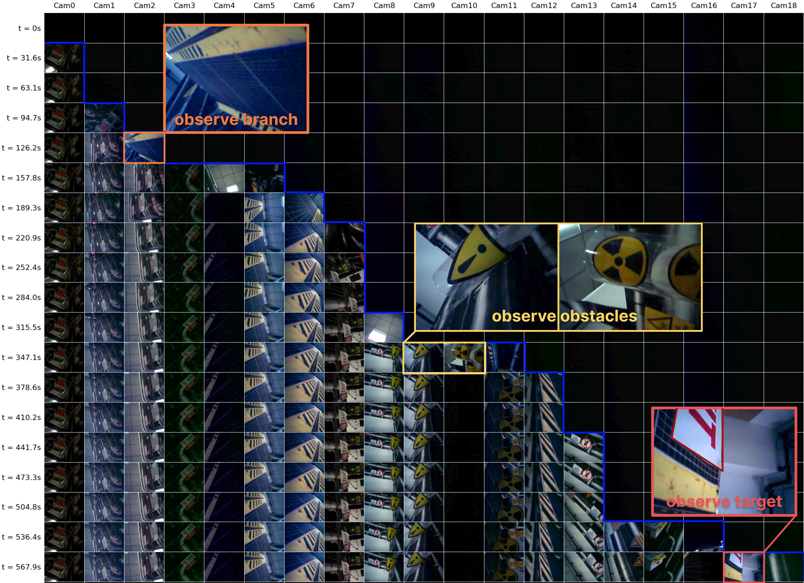
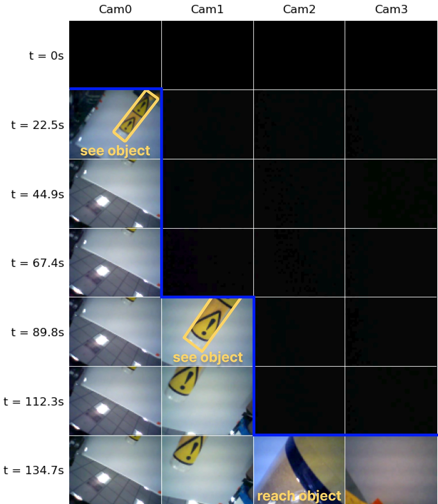
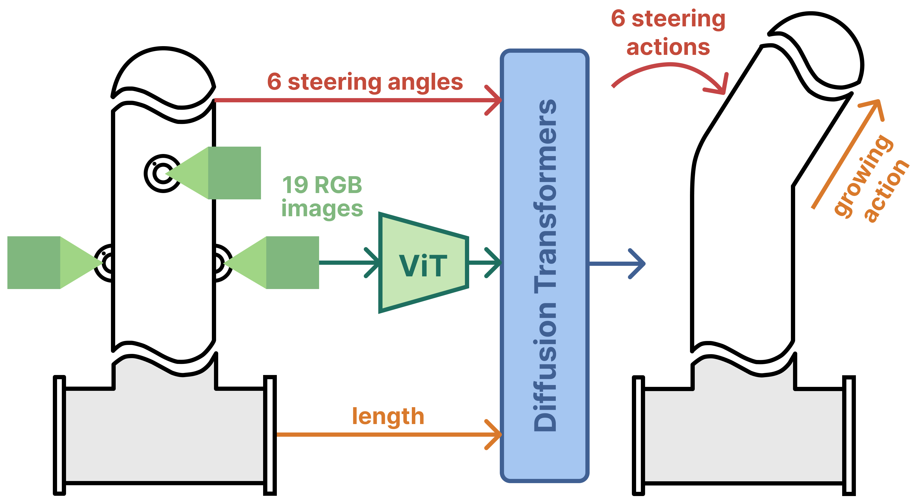

PanoVine
Whole-Body Visuomotor Control for Soft Growing Vine Robot
*Equal Contributions †Equal Advising
Whole-Body Visuomotor Control for Soft Growing Vine Robot
*Equal Contributions †Equal Advising
Vine robots, a class of soft, growing robots, are suitable for navigating complex and confined environments due to their compliant bodies and self-supporting growth mechanism. However, hysteresis, tether interactions, and deformations make them difficult to predict and model, which in turn limits the effectiveness of conventional planning and control approaches. In this work, we present a data-driven, vision-based control framework for the first autonomous vine robot system. Our system integrates 19 cameras distributed along the robot's body to provide comprehensive feedback of both the robot state and the surrounding environment. Using this rich whole-body vision feedback, we train an end-to-end visuomotor policy from demonstrations for closed-loop autonomous control in complex environments. The policy efficiently aggregates information from distributed sensing while maintaining robustness to inaccurate robot states and actuation. Experimental results demonstrate that the learned policy enables robust navigation and manipulation in challenging scenarios, including steering through branched structures, climbing up slopes, traversing unsupported terrain, reaching objects precisely, and maneuvering through confined spaces and obstacles.
Growth and steering. The 6 m, 7-DoF robot lengthens by everting body material at the tip and steers its shape with six distributed revolute joints.
19 body-mounted RGB cameras are gradually revealed as the robot grows, collectively providing multi-perspective feedback of both the robot body and its environment.


We learn an end-to-end visuomotor policy from teleoperated demonstrations. At each step it maps a history of multi-view images and proprioception to an action chunk.

A 6 m, 1.5 m-tall course chaining five skills—branch selection, slope climbing, unsupported-gap traversal, obstacle avoidance, and a sharp final turn. PanoVine reaches 80% success.
After 2 m of growth the robot must align its tip with an object to within a small angular tolerance, across seen and unseen objects at five locations. PanoVine reaches 85% success.
The authors would like to thank the CHARM Lab and REALab members for their helpful discussions and feedback on the manuscript. Xiaomeng Xu is supported by the Stanford Interdisciplinary Graduate Fellowship, and Yimeng Qin is supported by the Stanford Woods Institute for the Environment. This work was supported in part by NSF Awards #2143601, #2037101, and #2132519, an Amazon Research Gift, Stanford System-X, the Stanford Woods Institute for the Environment, and the Stanford University Sustainability Accelerator. The views and conclusions contained herein are those of the authors and should not be interpreted as necessarily representing the official policies, either expressed or implied, of the sponsors.
@misc{qin2026panovinewholebodyvisuomotorcontrol,
title={PanoVine: Whole-Body Visuomotor Control for Soft Growing Vine Robot},
author={Yimeng Qin and Xiaomeng Xu and William Heap and Aditi Oak and Shuran Song and Allison Okamura},
year={2026},
eprint={2606.22923},
archivePrefix={arXiv},
primaryClass={cs.RO},
url={https://arxiv.org/abs/2606.22923},
}